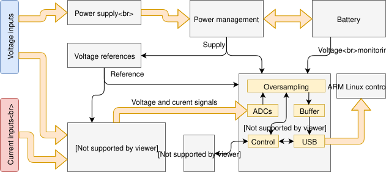
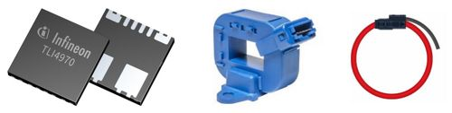

Hardware
There are few design approaches commondly used to adquiere current and voltage signals from a power source, from modular design based in adquisition cards for digitalization to a more compact solutions based entirelly in microcontrollers. Two of the key rules of openZmeter is to provide a low cost solution to power monitoring, and a easy to assamble and operate device. Taking this into account makes the usage of microcontroller solution more suitable. Also this solution provides and easy of update and low part count solution with lots of enchacements than can be implemented entirely in software, without the need of change hardware design.
openZmeter is designed around a open hardware module, provided in two versions, at the moment, than share the structure block design:

Adquisition hardware block diagram
Voltage and current inputs
La entrada de tension, en ambos modelos esta protegida contra sobretensiones de forma que una subida por encima de los limites permitidos no destruya el dispositivo. Esta procetccion se consigue con un varistor con la funcion de limitar la tension y una resistencia que actua de fusible. La resistencia cumple tambien con el objetivo de limitar la elevada corriente necesaria durante la conexion, cuando se cargan los condensadores a la tension de red.

Integrated hall effect sensor, active toroid and rogowski
Las entradas de corriente varian entre la version con sensor hall integrado y la version con sensores externos.
En el primer caso la corriente del circuito a monitorizar fluye a traves de openZmeter, pasando por un sensor de efecto hall integrado en el PCB. Esto obliga a dimensionar las pistas del PCB para la intensidad maxima de 50A permitida por el sensor.
En el segundo caso no existen requerimientos especiales de seccion de pistas, ya que las entradas de corriente solo recibiran la señal de baja tension e intensidad de los sensores externos. Aunque existen multitud de sensores para corriente, esta version soporta dos grandes bloques:
- Sensores activos, como diversos modelos del fabricante LEM. Este tipo de sensores requieren una tension de alimentacion para sus componentes internos (solo se soportan los modelos de 3.3v). El sensor entrega una tension centrada en 1.65v, y proporcional a la intensidad en circulacion, que puede ser positiva o negativa, resultando en un rango de entrada de 0.5 a 2.8v generalmente.
- Sensores pasivos, como transformadores de corriente o rogowski. En este caso el elemento sensor entrega una tension proporcional a la corriente en circulacion (pudiendo ser positiva o negativa). No contienen elementos activos y para obtener un rango de medida apropiado es necesario que uno de los extremos este alimentado a la tension central de medida de 1.65v, permitiendo que tanto al medir corrientes positivas como negativas el resultado este dentro del rango de medida.
Mediante un jumper puede seleccionarse el modo de operacion, que en cada caso debera de acompañarse del conexionado apropiado.
Power supply
La tension necesaria para el funcionamiento de openZmeter se obtiene de la red. Para esto es necesario adaptar la tension a unos niveles apropiados, en cada modelo se ha usado una solucion distinta, atendiendo a distintas necesidades
La version basica utiliza un modulo convertidor AC/DC que proporciona una salida estable de 5v para una entrada universal de linea de 85 a 265VAC. Esta solucion proporciona aislamiento entre la red y los demas componentes del PCB, lo que facilita la manipulacion y depuracion.
En la version trifasica se utiliza un convertidor DC/DC tipo buck de amplio rango de entrada (Viper26). El diseño y seleccion de componentes se ha realizado utilizando el simulador y las notas de aplicacion ofrecidas por el propio fabricante, obteniendo una fuente capaz de funcionar entre 50 y 320VAC y ofrecer la intensidad suficiente para alimentar todos los componentes. Los bloques que la componene son:
- Rectificador de entrada. El CI usado requiere una entrada en DC, que se consigue con 3 diodos rectificadores, uno por fase. Estos diodos tienen que soportar al menos el doble de la tension de red. Los utilizados admiten hasta 1000v.
- Filtro de entrada, que evita que el ruido de la fuente se filtre a la red y estabiliza la tension rectificada.
- Conversor buck, que reduce la tension hasta 22v ofreciendo hasta 4.5W. El rizado de salida es alto, alcanzando el 10% en situaciones de poca carga de la fuente.
- Conversor buck secundario. Por limitaciones del CI utilizado no es posible obtener directamente la tension estable de 5v requerida, por lo que la conversion se realiza en dos etapas, utilizando en un segundo conversor la tension de 22v del primero para obtener una de 5v estable, con bajo rizado y hasta con 1A de capacidad. La segunda etapa utiliza en MCP16312 con el diseño ofrecido por el fabricante en sus notas de aplicacion.
Battery
Aunque la fuente de alimentacion genera la tension de funcionamiento para todo el modulo, openZmeter requiere de bateria, para poder continuar activo aun cuando no exista tension de red, o esta este fuera de los rangos de funcionamiento de la fuente. Se incorpora una bateria de ion de litio con proteccion integrada.
Este tipo de baterias proporciona una tension de entre 3.5 y 4.2v, incorporando internamente la electronica necesaria para evitar tanto la sobrecarga como la sobredescarga. El PCB de openZmeter incorpora el controlador de carga necesario para que la bateria almacene energia mientras exista conexion a la red electrica. El responsable de gestionar la carga es el MCP73832, que limita a unos 100mA la corriente maxima de carga.
Power management
Ambas versiones requieren de 5v para alimentar todos los componentes. El disponer de la fuente de alimentacion que ofrece 5v y de la bateria que entrega de 3.5 a 4.2v es necesario una ultima conversion, que seleccione la entrada apropiada y que regule la tension a 5v. Este paso se realiza con un convertidor DC/DC tipo boost (MCP1642) utilizando un diseño tipico ofrecido por el fabricante. La seleecion de una entrada o otra (bateria o alimentacion externa) se realiza por medio de un MOSFET, que conecta la bateria a la entrada del conversor cuando no hay tension en el conversor de entrada.
Todos los conversores utilizan condensadores sobredimensionados respecto a la recomendacion del fabricante, mejorando la estabilidad de la tension entregada y tolerando mejor las variaciones en las entradas. En gran medida esto repercute en la estabilidad de las medidas realizadas.
Voltage references
Tanto el ADC del microcontrolador como los sensores requieren de una tension muy precisa para que las lecturas puedan realizarse de manera correcta. A partir de los 5v de entrada que proporcionan las diversas etapas de alimentacion se derivan 3 salidas orientadas a que las lecturas sean optimas:
- Digital de 3.3v, que se deriva con un convertidor lineal (MCP1700) y que alimenta el microcontrolador y los sensores LEM en caso de ser los usados.
- Referencia de 3.3v y referencia de 1.65v, ambas se generan a partir de un CI especifico de alta estabilidad (REF2033), estan aisladas del resto de tensiones para evitar ruido y se utilizan como referencia para el ADC y como punto medio para la digitalizacion de tension y corriente (en caso de usar transformador de corriente o rogowski).
Signal conditioning
El proceso de captura de datos, es realizado por un microcontrolador STM32, que lee los canales ADC de tension y corriente, almacena estos valores en un buffer y realiza el envio, a traves del puerto USB al controlador que procesara estos valores (NanoPi Neo Air). Adicionalmente el firmware realiza otras funciones auxiliares:
- Lectura de botones de funcion (Fn1 y Fn2)
Algunas funciones de los botones son controladas por el firmware, otras son enviadas al controlador NanoPi Neo Air para que realize las funciones apropiadas:
- Click simple (menos de un segundo) en Fn1
Cambia la visualizacion de la pantalla, rotando entre los parametros del nodo, en caso de ser posible.
- Click largo en Fn1 (mas de 5 segundos)
Se envia a la NanoPi Neo Air para que se realize un apagado controlado. Tras 5 segundos despues de detectar la desconexion del puerto USB se retira la alimentacion de la placa.
- Click simple (menos de un segundo) en Fn2
Se enviara a la NanoPi Neo Air para que se habilite el modo de configuracion. Tras unos segundos se creara el punto de acceso 'openZmeter', al que podra conectarse y configurar la conexion real y otros parametros.
- Click largo en Fn2 (mas de 5 segundos)
Se retira la alimentacion a la placa NanoPi Neo Air sin enviar ningun mensage previamente (HardReset).
Por defecto el STM32 mantiene cortada la alimentacion a la NanoPi Neo Air, en este estado, o siempre que la alimentacion este desconectada, la actuacion sobre cualquier boton reanudara la alimentacion.
- Watchdog
Tras la conexion de la NanoPi Neo Air, esta deberia de comunicar con el STM32 tras iniciarse el sistema, siempre que no se este en modo de configuracion. Una vez abierto el puerto debera de leerse de forma continua. Cada lectura reiniciara el watchdog. En caso de que no se produzca ninguna lectura durante 1 segundo, se desconectara la alimentacion y tras 1 segundo se reanudara.
- Monitor bateria
El STM32 lee el nivel de bateria de manera periodica, e informa de esta a la NanoPi Neo Air . Si la bateria llega a 0%, la placa puede iniciar un apagado controlado.
- Pantalla
El STM32 controla la pantalla I2C, muestra el nivel de bateria, el nivel y estado de la WIFI, la fecha y hora del sistema y los valores de red bajo analisis. Para mostrar esta informacion es necesario comunicarse con el servicio de analisis que se ejecuta en la NanoPi Neo Air y por tanto la informacion que puede mostrarse cambiara segun en que estado de ejecucion este el sistema.
Comunicacion
El acceso al STM32 se realiza a través del puerto USB, no se implementa ninguna clase predefinida en el standar, o lo que es lo mismo bDeviceClass es VENDOR_DEFINED. El hardware de captura no necesita instalar driver, ya que la comunicacion se realiza directamente enviando datos al endpoint 0 (CONTROL) y recibiendo datos a traves del endpoint 1 (BUCK) del dispositivo USB con la libreria libusb.
Descriptor
La identificación del dispositivo, útil en caso de haber varios en el mismo sistema, se realiza por medio del numero de serie, accesible en el descriptor del USB. También es accesible la versión del firmware que esta en ejecución, y que determina el formato de los datos intercambiados.
EP0 (CONTROL)
A traves de este endpoint se controla y se consulta al STM32. Los metodos disponibles son:
- FIRM_SETUP_CAPTURE (0x00):
 Inicia la captura de datos en el ADC y su envio al controlador. Si la captura ya estaba activa, se reinicia usando los nuevos parametros:
Inicia la captura de datos en el ADC y su envio al controlador. Si la captura ya estaba activa, se reinicia usando los nuevos parametros:
- Channels
(1 Byte): Determina en que canales se realizara la captura. En realidad la captura se realiza en todos los canales disponibles, pero solo los seleccionados se transferiran al controlador para optimizar el ancho de banda disponible:
Bit 0: Canal de tension A activoBit 1: Canal de tension B activoBit 2: Canal de tension C activoBit 3: Canal de corriente A activoBit 4: Canal de corriente B activoBit 5: Canal de corriente C activoBit 6: Canal de corriente D activoBit 7: Reservado
- Speed
(1 byte): Determina la velocidad de muestreo y oversampling. Todos las velocidades de captura son multiplos de 50 y 60Hz. Los valores admitidos son:
0x00 - Freq. muestreo 24kHz - Freq. Envio 6kHz
Una vez enviado este comando, el endpoint 1 se activara si no lo estaba, y comenzara a enviar los valores leidos del ADC. El numero de sequencia se reiniciara a 0 y las muestras anteriores, en caso de haber, seran eliminadas.
Transacciones IN (Dispositivo a host) Data transfer Solo existe un tipo de transaccion IN,
destinada a la lectura de datos por parte del host. Esta transaccion, de 64 bytes de longitud contiene los campos:
Seq : Numero de sequencia del bloque, aumenta con cada nuevo bloque enviado. Al contener cada bloque partes incompletas de una muestra,
este numero de secuencia es imprescindible para reconstruir las muestras de manera correcta. Info :
Este campo ofrece una doble función: Bit 7; Estado del boton Fn1. Bit 6: Estado del boton Fn2. Bit 5:
Alimentacion activa. (Aunque oZm este conectado y reciba tensión de linea, esta puede ser baja o demasiado alta
para el correcto funcionamiento, en estos casos la fuente de entrada se desconecta para evitar daños).
Bits 4..0: Corresponden al nivel de bateria. 0000 corresponden a 3v de tension. 1111
corresponden a 4.3v de tension. Samples: Las muestras se envian de manera secuencial, incluyendo solo los canales activados.
En la imagen se muestra un ejemplo de la trama en 3 phase + neutro y en monofasica, pero seria posible cualquier combinacion de
canales, como por ejemplo una tension y cuatro medidas de corriente. El orden de envió es el mismo que se indica en Mode
(del bit menos significativo al mas significativo.
Transacciones OUT (Host a dispositivo) OUT Solo existe un tipo de transacción OUT, con la función de iniciar la captura,
fijando el modo y velocidad de adquisición, se usa esta misma transacción para informar al hardware del estado de la red
y reiniciar el watchdog que controla la alimentación del host. Mode: Configura los canales de captura utilizados.
Bit 7: Activa/Detiene la captura.
Bit 6: Activa el canal de corriente 4. Bit 5: Activa el canal de corriente 3.
Bit 4: Activa el canal de corriente 2. Bit 3: Activa el canal de corriente 1.
Bit 2: Activa el canal de tensión 3. Bit 1: Activa el canal de tensión 2. Bit 0: Activa el canal de tensión 1.
Speed: Determina la velocidad de captura. Esta viene determinada por
Stat1: Informa de estado de CPU y RAM. Bits [7..4]: Nivel de uso de CPU (entre 0 y 15). Bits [ 3..0]: Nivel de uso de RAM (entre 0 y 15). Stat2: Informa del estado del almacenamiento y la red. Bits[7..4]: Nivel de uso del almacenamiento (Entre 0 y 15). Bits[3..0]: Estado de la red, donde: 0000 indica que se esta en modo AP (sin configurar). 0001 indica que se esta en modo STA pero sin conexion. 0010 a 1111 indica que se esta conectado, y el nivel de señal de la red. Timestamp: Fecha del sistema.